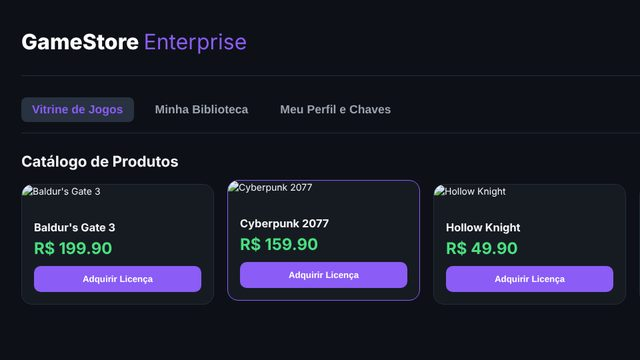
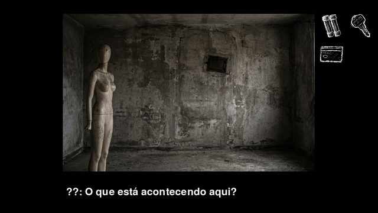
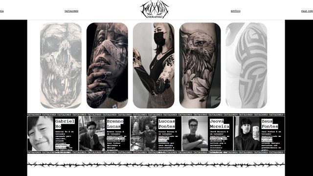

BiografiaBio
Estudante de Ciências da Computação e Informática, atualmente no 6º período, em busca de oportunidade de estágio na área de Tecnologia da Informação. Conhecimento técnico em programação (C, Python, TypeScript, Node.js, Java, Dart/Flutter), eletrônica com C, banco de dados (MySQL), integração de APIs e versionamento com Git. Computer Science student, currently in the 6th semester, looking for an internship in Information Technology. Technical knowledge in programming (C, Python, TypeScript, Node.js, Java, Dart/Flutter), electronics with C, databases (MySQL), API integration and version control with Git.HabilidadesSkills
C Python TypeScript Node.js Java Dart/Flutter MySQL FastAPI SQLite Pygame Git/GitHub Docker Selenium TCP/IP · DNS · HTTP Linux/Windows Photoshop Premiere Inglês fluenteFluent EnglishExperiênciaExperience
- CAGEPA · Assistente Administrativo Aprendiz (jun/2024 a fev/2026): suporte administrativo e automação de tarefas com Python e Selenium, por iniciativa própria. Apprentice Administrative Assistant (Jun 2024 – Feb 2026): administrative support and task automation with Python and Selenium, on my own initiative.
- Freelancer · Designer gráfico (2018 até hoje): identidade visual e artes digitais. Graphic designer (2018 – present): visual identity and digital art.
- AID · Unipê · Voluntário (2024 até hoje): recuperação e manutenção de computadores doados. Volunteer (2024 – present): repairing and maintaining donated computers.
FormaçãoEducation
Ciências da Computação e Informática, Unipê (jan/2024 a dez/2027, previsto). 6º período. Computer Science, Unipê (Jan 2024 – Dec 2027, expected). 6th semester.DisponibilidadeAvailability
Estágio em desenvolvimento de software / TI, período da tarde. Software development / IT internship, afternoons only.ProjetosProjects
Gênesis
App mobile de filmes, séries e livros. Mobile app for movies, series and books.Flutter/Dart + Python/FastAPI + SQLite. APIs TMDB e Google Books, busca unificada, login, perfis, favoritos, player para obras de domínio público e mais de 15 endpoints REST. Flutter/Dart + Python/FastAPI + SQLite. TMDB and Google Books APIs, unified search, login, profiles, favorites, a player for public-domain works and 15+ REST endpoints.
[GitHub]Loja de jogosGame store
Microsserviços (projeto em grupo). Microservices (team project).Serviços de usuários, catálogo, pedidos e pagamentos, mais frontend. Docker Compose, Nginx e GitHub Actions. Users, catalog, orders and payments services plus a frontend. Docker Compose, Nginx and GitHub Actions.
[GitHub]
Mesmerise
Protótipo point-and-click. Point-and-click prototype.Jogo em Python e Pygame, estudo de lógica de jogos. Python and Pygame game, a study in game logic.
[GitHub]
Estúdio de TatuagensTattoo Studio
Primeiro contato com desenvolvimento frontend: site em HTML construído durante o primeiro período (P1). First contact with frontend development: HTML website built during the first semester (P1). [GitHub]